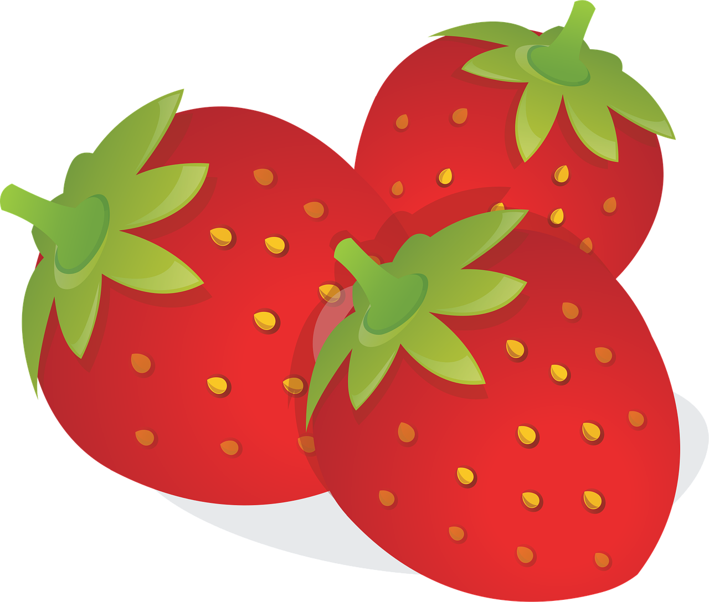
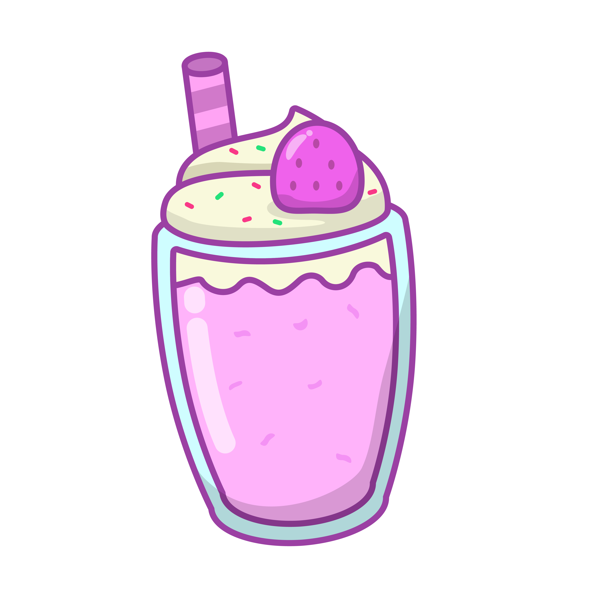

Start is automatically set to your current location. If you want to change it, click on the start input field and then click on the map.
Click on where you want to start, then click on where you want to end. If you want to change start, click on start again, same with end.